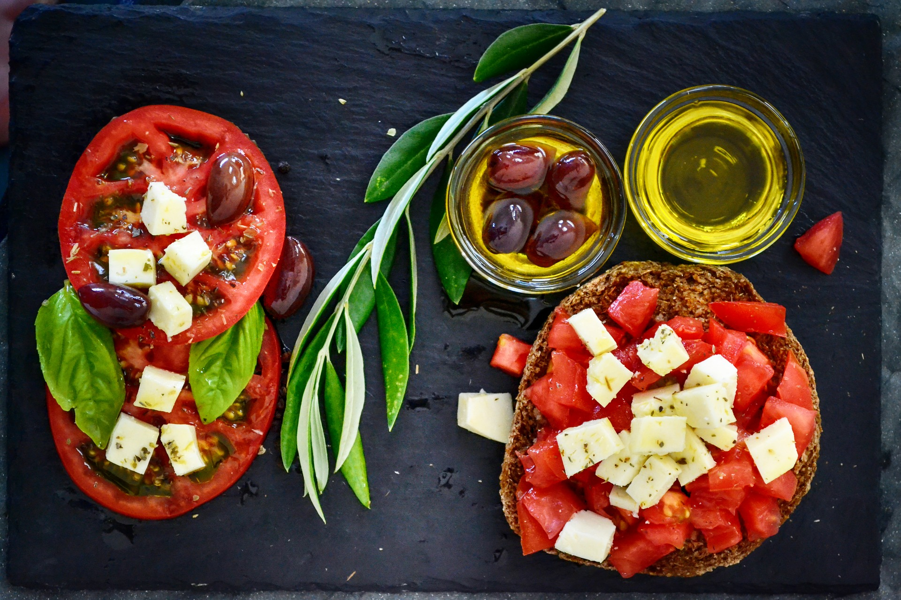

Numerous studies have now shown that the Mediterranean diet can cause weight loss and help prevent many diseases.
By Kris Gunnars, BSc April 18, 2020
The Mediterranean diet is based on the traditional foods that people used to eat in countries like Italy and Greece back in 1960. Researchers noted that these people were exceptionally healthy compared to Americans and had a low risk of many lifestyle diseases. Numerous studies have now shown that the Mediterranean diet can cause weight loss and help prevent heart attacks, strokes, type 2 diabetes and premature death. There is no one right way to follow the Mediterranean diet, as there are many countries around the Mediterranean sea and people in different areas may have eaten different foods. This article describes the dietary pattern typically prescribed in studies that suggest it’s a healthy way of eating. Consider all of this as a general guideline, not something written in stone. The plan can be adjusted to your individual needs and preferences.
The Basics
• Eat: Vegetables, fruits, nuts, seeds, legumes, potatoes, whole grains, breads, herbs, spices, fish, seafood and extra virgin olive oil. • Eat in moderation: Poultry, eggs, cheese and yogurt. • Eat only rarely: Red meat. • Don't eat: Sugar-sweetened beverages, added sugars, processed meat, refined grains, refined oils and other highly processed foods.
Avoid These Unhealthy Foods
• Added sugar: Soda, candies, ice cream, table sugar and many others. • Refined grains: White bread, pasta made with refined wheat, etc. • Trans fats: Found in margarine and various processed foods. • Refined oils: Soybean oil, canola oil, cottonseed oil and others. • Processed meat: Processed sausages, hot dogs, etc. • Highly processed foods: Anything labeled "low-fat" or "diet" or which looks like it was made in a factory.
Foods to Eat
Exactly which foods belong to the Mediterranean diet is controversial, partly because there is such variation between different countries. The diet examined by most studies is high in healthy plant foods and relatively low in animal foods. However, eating fish and seafood is recommended at least twice a week. The Mediterranean lifestyle also involves regular physical activity, sharing meals with other people and enjoying life. You should base your diet on these healthy, unprocessed Mediterranean foods:
• Vegetables: Tomatoes, broccoli, kale, spinach, onions, cauliflower, carrots, Brussels sprouts, cucumbers, etc. • Fruits: Apples, bananas, oranges, pears, strawberries, grapes, dates, figs, melons, peaches, etc. • Nuts and seeds: Almonds, walnuts, macadamia nuts, hazelnuts, cashews, sunflower seeds, pumpkin seeds, etc. • Legumes: Beans, peas, lentils, pulses, peanuts, chickpeas, etc. • Tubers: Potatoes, sweet potatoes, turnips, yams, etc. • Whole grains: Whole oats, brown rice, rye, barley, corn, buckwheat, whole wheat, whole-grain bread and pasta. • Fish and seafood: Salmon, sardines, trout, tuna, mackerel, shrimp, oysters, clams, crab, mussels, etc. • Poultry: Chicken, duck, turkey, etc. • Eggs: Chicken, quail and duck eggs. • Dairy: Cheese, yogurt, Greek yogurt, etc. • Herbs and spices: Garlic, basil, mint, rosemary, sage, nutmeg, cinnamon, pepper, etc. • Healthy Fats: Extra virgin olive oil, olives, avocados and avocado oil.
Whole, single-ingredient foods are the key to good health.
What to Drink
Water should be your go-to beverage on a Mediterranean diet. This diet also includes moderate amounts of red wine — around 1 glass per day. However, this is completely optional, and wine should be avoided by anyone with alcoholism or problems controlling their consumption. Coffee and tea are also completely acceptable, but you should avoid sugar-sweetened beverages and fruit juices, which are very high in sugar.
A Mediterranean Sample Menu for 1 Week
Below is a sample menu for one week on the Mediterranean diet. Feel free to adjust the portions and food choices based on your own needs and preferences.
Monday
• Breakfast: Greek yogurt with strawberries and oats. • Lunch: Whole-grain sandwich with vegetables. • Dinner: A tuna salad, dressed in olive oil. A piece of fruit for dessert.
Tuesday
• Breakfast: Oatmeal with raisins. • Lunch: Leftover tuna salad from the night before. • Dinner: Salad with tomatoes, olives and feta cheese.
Wednesday
• Breakfast: Omelet with veggies, tomatoes and onions. A piece of fruit. • Lunch: Whole-grain sandwich, with cheese and fresh vegetables. • Dinner: Mediterranean lasagne.
Thursday
• Breakfast: Yogurt with sliced fruits and nuts. • Lunch: Leftover lasagne from the night before. • Dinner: Broiled salmon, served with brown rice and vegetables.
Friday
• Breakfast: Eggs and vegetables, fried in olive oil. • Lunch: Greek yogurt with strawberries, oats and nuts. • Dinner: Grilled lamb, with salad and baked potato.
Saturday
• Breakfast: Oatmeal with raisins, nuts and an apple. • Lunch: Whole-grain sandwich with vegetables. • Dinner: Mediterranean pizza made with whole wheat, topped with cheese, vegetables and olives.
Sunday
• Breakfast: Omelet with veggies and olives. • Lunch: Leftover pizza from the night before. • Dinner: Grilled chicken, with vegetables and a potato. Fruit for dessert.
The Bottom Line
Though there is not one defined Mediterranean diet, this way of eating is generally rich in healthy plant foods and relatively lower in animal foods, with a focus on fish and seafood. You can find a whole world of information about the Mediterranean diet on the internet, and many great books have been written about it. Try googling "Mediterranean recipes" and you will find a ton of great tips for delicious meals. At the end of the day, the Mediterranean diet is incredibly healthy and satisfying. You won't be disappointed.
A balanced diet is one that gives your body the nutrients it needs to function correctly.
By Brian Krans
This article provides a beginner's guide to the vegetarian diet, including a sample meal plan for one week.
By Rachael Link, MS, RD